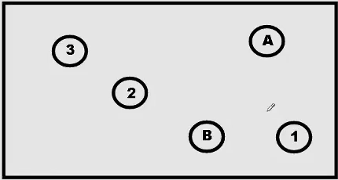

<!DOCTYPE html>
<html>
<head>   
    <!-- jQuery -->

    <!-- <script src="https://ajax.googleapis.com/ajax/libs/jquery/3.3.1/jquery.min.js"></script> -->
    <script src="C:\Users\Gustavo\Desktop\REPOS\TMT_ONLINE_REPO\jsPsych_online_TMT\jspsych\plugins\virtual_chin_dependencies\jquery.min.js"></script>

    <!-- <script src="https://code.jquery.com/ui/1.12.1/jquery-ui.min.js" integrity="sha256-VazP97ZCwtekAsvgPBSUwPFKdrwD3unUfSGVYrahUqU=" crossorigin="anonymous"></script> -->
    <script src="C:\Users\Gustavo\Desktop\REPOS\TMT_ONLINE_REPO\jsPsych_online_TMT\jspsych\plugins\virtual_chin_dependencies\jquery-ui.min.js"></script>

    <!-- virtual chin css -->
    <link href="C:\Users\Gustavo\Desktop\librerias_virtualChin\styles.css" rel="stylesheet" type="text/css">

    <!-- <link href="https://maxcdn.bootstrapcdn.com/bootstrap/3.3.7/css/bootstrap.min.css" rel="stylesheet" integrity="sha384-BVYiiSIFeK1dGmJRAkycuHAHRg32OmUcww7on3RYdg4Va+PmSTsz/K68vbdEjh4u" crossorigin="anonymous"> -->
    <link href= "C:\Users\Gustavo\Desktop\REPOS\TMT_ONLINE_REPO\jsPsych_online_TMT\jspsych\plugins\virtual_chin_dependencies\bootstrap.min.css">
 
    <!-- <link href="https://code.jquery.com/ui/1.12.1/themes/base/jquery-ui.css" rel="stylesheet" type="text/css"> -->
    <link href="C:\Users\Gustavo\Desktop\REPOS\TMT_ONLINE_REPO\jsPsych_online_TMT\jspsych\plugins\virtual_chin_dependencies\jquery-ui.css" rel="stylesheet" type="text/css">

    <link rel="stylesheet" href='C:\Users\Gustavo\Desktop\REPOS\TMT_ONLINE_REPO\jsPsych_online_TMT\jspsych\css/jspsych.css'> 

    <!-- SVG.js -->

    <!-- <script src="https://cdnjs.cloudflare.com/ajax/libs/svg.js/2.6.3/svg.min.js"></script> -->
    <script src="C:\Users\Gustavo\Desktop\REPOS\TMT_ONLINE_REPO\jsPsych_online_TMT\jspsych\plugins\virtual_chin_dependencies\svg.min.js"></script>

    <!-- jsPsych library -->
    <script src="jspsych/jspsych.js"></script>

    <!-- jsPsych plugins-->
    <!-- <script src="jspsych/plugins/jspsych-call-function.js"></script> -->
    <script src="jspsych/plugins/jspsych-fullscreen.js"></script>   
    <script src="jspsych/plugins/jspsych-survey-html-form.js"></script>
    <script src= 'jspsych/plugins/jspsych-virtual-chin-copy.js'></script>
    <script src="jspsych/plugins/jspsych-resize_modified.js"></script>
    <script src="jspsych/plugins/jspsych-html-keyboard-response.js"></script>
    <script src="jspsych/plugins/jspsych-instructions_modified.js"></script>   
    <script src="jspsych/plugins/jspsych-draw-and-mouse-tracking.js"></script>   
    
    <!-- For local saving of the data in CSV format -->
    <script src="utils.js"></script> 

</head>
<body></body>
<script>
    let timeline = [];


    let x = 0;
    let y = 0; 
    isDrawing = false;

    // To avoid scroll down when press space bar
    window.onkeydown = function(e) {
    return e.keyCode !== 32;
    };

    // disable scrolling page
    function disableScroll() { 
            // Get the current page scroll position 
            scrollTop = 
            window.pageYOffset || document.documentElement.scrollTop; 
            scrollLeft = 
            window.pageXOffset || document.documentElement.scrollLeft, 

                // if any scroll is attempted, 
                // set this to the previous value 
                window.onscroll = function() { 
                    window.scrollTo(scrollLeft, scrollTop); 
                }; 
        } 


    // disableS croll();

    //Shuffle using Fisher-Yates
function shuffle(array) {
        var currentIndex = array.length, temporaryValue, randomIndex;

        // While there remain elements to shuffle...
        while (0 !== currentIndex) {

            // Pick a remaining element...
            randomIndex = Math.floor(Math.random() * currentIndex);
            currentIndex -= 1;

            // And swap it with the current element.
            temporaryValue = array[currentIndex];
            array[currentIndex] = array[randomIndex];
            array[randomIndex] = temporaryValue;
        }

        return array;
    }
  
 
    // presentation time of the fixation cross
    var delayInMilliseconds = 1000; // it´s an indirect way to control the momento of presentation of images

    //For loading all images, but we'll present half 
    
    images = ["./stimuli/cond1/stim_1_A.jpg", "./stimuli/cond1/stim_2_B.jpg", "./stimuli/cond1/stim_3_A.jpg", "./stimuli/cond1/stim_4_B.jpg", "./stimuli/cond1/stim_5_A.jpg", 
              "./stimuli/cond1/stim_6_B.jpg", "./stimuli/cond1/stim_7_A.jpg", "./stimuli/cond1/stim_8_B.jpg", "./stimuli/cond1/stim_9_A.jpg", "./stimuli/cond1/stim_10_B.jpg", 
              "./stimuli/cond1/stim_11_A.jpg", "./stimuli/cond1/stim_12_B.jpg", "./stimuli/cond1/stim_13_A.jpg", "./stimuli/cond1/stim_14_B.jpg", "./stimuli/cond1/stim_15_A.jpg",
              "./stimuli/cond1/stim_16_B.jpg", "./stimuli/cond1/stim_17_A.jpg", "./stimuli/cond1/stim_18_B.jpg", "./stimuli/cond1/stim_19_A.jpg", "./stimuli/cond1/stim_20_B.jpg",
              "./stimuli/cond2/stim_2_A.jpg", "./stimuli/cond2/stim_1_B.jpg", "./stimuli/cond2/stim_4_A.jpg", "./stimuli/cond2/stim_3_B.jpg", "./stimuli/cond2/stim_6_A.jpg", 
              "./stimuli/cond2/stim_5_B.jpg", "./stimuli/cond2/stim_8_A.jpg", "./stimuli/cond2/stim_7_B.jpg", "./stimuli/cond2/stim_10_A.jpg","./stimuli/cond2/stim_9_B.jpg",
              "./stimuli/cond2/stim_12_A.jpg","./stimuli/cond2/stim_11_B.jpg","./stimuli/cond2/stim_14_A.jpg","./stimuli/cond2/stim_13_B.jpg","./stimuli/cond2/stim_16_A.jpg",
              "./stimuli/cond2/stim_15_B.jpg", "./stimuli/cond2/stim_18_A.jpg", "./stimuli/cond2/stim_17_B.jpg","./stimuli/cond2/stim_20_A.jpg", "./stimuli/cond2/stim_19_B.jpg"]

    // Two conditions with 20 stimuli each 
    const images_condition_1 = images.slice(0,20);
    const images_condition_2 = images.slice(20,40);

    //Trials A and B separation inside each condition
    const images_condition_1_A = [];
    const images_condition_1_B = [];

    const images_condition_2_A = [];
    const images_condition_2_B = [];

    //We need a for lop in order to divide images_condition_x in A type and B type trials.

    for (idx = 0; idx < images_condition_1.length; idx++) {
        if (idx % 2 == 0){
            images_condition_1_A.push(images_condition_1[idx])
        }else {
            images_condition_1_B.push(images_condition_1[idx])
        }
    }

    for (idx = 0; idx < images_condition_2.length; idx++) {
        if (idx % 2 == 0){
            images_condition_2_A.push(images_condition_2[idx])
        }else {
            images_condition_2_B.push(images_condition_2[idx])
        }
    }

    //Shuffle every sub group of images
    images_condition_1_A_shuffled = shuffle(images_condition_1_A);
    images_condition_1_B_shuffled = shuffle(images_condition_1_B);

    images_condition_2_A_shuffled = shuffle(images_condition_2_A);
    images_condition_2_B_shuffled = shuffle(images_condition_2_B);

    //RE-DO 2 arrays, randomized but with intercalated A/B trials
    let final_images = []; //I can concatenate  two sets of conditions at end

    let final_images_condition_1 = [];
    let final_images_condition_2 = [];

    for (idx = 0; idx < (images_condition_1_A_shuffled.length); idx++) {
        final_images_condition_1.push(images_condition_1_A_shuffled[idx])
        final_images_condition_1.push(images_condition_1_B_shuffled[idx])
    }    
    
    for (idx = 0; idx < (images_condition_1_A_shuffled.length); idx++) {
        final_images_condition_2.push(images_condition_2_A_shuffled[idx])
        final_images_condition_2.push(images_condition_2_B_shuffled[idx])
    }

    // final_images = final_images_condition_1.concat(final_images_condition_2);


    // //Random number between 0 and 1 used to choose the set of stimuli btween the 2 groups randomly
    const random_number = Math.random()
    // console.log(random_number)

    // store all images names in an array of objects {'fileName': images[imag]}
    let container = { }; // main object
    timelineVariables = [];   

    //select randomly between two set of images
    if (random_number > 0.5){
        // console.log('mayor que 0.5')
        for (imag in final_images_condition_1){
            // imag = 'stimuli/'+imag;
            timelineVariables.push(container['prop'+ imag ]   = { 'fileName': final_images_condition_1[imag]}
            ); 
    }
    } else {
        for (imag in final_images_condition_2){
            // console.log('menor que 0.5')
            // imag = 'stimuli/'+imag;
            timelineVariables.push(container['prop'+ imag ]   = { 'fileName': final_images_condition_2[imag]}
            ); 
        }
    }

    // ** Experiment's blocks **

    // Welcome
    var welcome_block = {
            data: {
                screen_id: "Bienvenidx"
            },
            type: "survey-html-form",
            preamble: "<p>¡Te damos la bienvenida al experimento!</p>" + "Por favor, completa los siguientes datos: </p> </p> ",

            html: 
                `<table>
                    <tr>
                    <td align="right">Edad:</td>
                    <td align="left"><input name="age" type="number" required="" /></td>
                    </tr>
                    <tr>
                    <td align="right">Género:</td>
                    <td align="left"><input list="gender" id="gender-choice" name="gender-choice" required="" /><datalist id="gender"> 
                    <option value="MASCULINO"> <option value="FEMENINO"> <option value="OTRO"></datalist></td>
                    </tr>
                    <tr>
                    <td align="right">Dispositivo de entrada:</td>
                    <td align="left"><input list="MouseOrPad" id="MouseOrPad-choice" name="MouseOrPad-choice" required="" /><datalist id="MouseOrPad"> 
                    <option value="Mouse">  <option value="pad de notebook"> <option value="otro"></datalist> </td>
                    </tr>
                    <tr>
                    <td align="right">Mano hábil:</td>
                    <td align="left"><input list="hand" id="hand-choice" name="hand-choice" required="" /><datalist id="hand"> 
                    <option value="izquierda">  <option value="derecha"> </datalist></td>
                    </tr>
                    <tr>
                    <td align="right">¿Dispositivo configurado para mano hábil?</td>
                    <td align="left"><input list="hand_config" id="hand_config-choice" name="hand_config-choice" required="" /><datalist id="hand_config"> 
                    <option value="si"> <option value="no"></datalist></td>
                    </tr>
                    <tr>
                    <td align="right">E-mail:</td>
                    <td align="left"><input name="mail" type="email" required="" /></td>
                    </tr>
                </table>`,

                button_label: "Continuar"
                };
    //virtual chin rest = size of card + blindspot task
    var chin = {    
        type: 'virtual-chin'
    }

    // Instructions for the experiment. Text + gifs
    var explanation = {
    type: 'instructions',
    pages: [
            ` 
            <p style='font-size:150%;color:black'>  Este experimento consta de dos tipos de ensayos y tendrá un límite de tiempo 
            fijo para resolver cada uno.<br>` ,

              `<br> <br>
              <p style='font-size:130%;color:black'>
              Los ensayos del primer tipo consisten en una serie de números del 1 al 20 rodeados cada
              uno por un círculo.<br> Su objetivo será unir con un trazo continuo los puntos en orden creciente,<br> tratando de
              evitar que los trazos se toquen.<br> <br> 
              AL COMENZAR CADA ENSAYO VERÁ UNA CRUZ EN EL CENTRO DE LA PANTALLA,<br> CUANDO ESTA DESAPAREZCA Y VEA LOS CIRCULOS
              DEBERÁ PRESIONAR EL BOTON IZQUIERDO DEL MOUSE (O SU PAD DE NOTEBOOK) <br>Y
              MANTENERLO PRESIONADO HASTA TERMINARLO.<br> No levante el dedo del botón al menos que
              haya terminado el ensayo, o que este haya terminado por superar el tiempo límite.</p>`,

              `<br> <br>
              <p style='font-size:150%;color:black'>
                El otro tipo de ensayo consiste en una serie de números del 1 al 10 y letras de la A
              a la J.<br> Su objetivo será unir con un trazo continuo los puntos de manera alternada (ejemplo 1-A-2-B-3-C,
              etc).<br><br><br>
  
              Su objetivo será realizar la tarea lo mejor y más rápidamente posible.<br><br>
              Los ensayos van a aparecer siempre alternadamente.<br><br>

              Presione Siguiente para comenzar el experimento.<br>
              
              ¡Suerte y muchas gracias por participar!</p>`
            ],
    show_clickable_nav: true,
    show_page_number: true,
    button_label_previous: 'Anterior',
    button_label_next: 'Siguiente',
    page_label: 'Página'
  }

  var greetings = {
            type: "html-keyboard-response",
            stimulus: '<p style="font-size: 48px;">"El experimento terminó <br><br><br> ¡Muchas gracias por haber participado! <br><br><br>Presioná cualquier tecla para enviar los datos"</p>',
            // choices: jsPsych.NO_KEYS
        };


    var fullScreen = {
        type: 'fullscreen',
        fullscreen_mode: true,
        message: '<p>El experimento ira a pantalla completa cuando usted presione el boton que se encuentra debajo</p><br>',
        button_label: 'Continuar a pantalla completa'    
    } 

    // Resize trial with credit card firts measurement

    //if it's bigger, the image displayed is bigger too
    // let pixel_factor = 0.75;
    
    var resize_trial = {
        type: 'resize',
        item_width: 3 + 3/8, //Width of credit card in inches
        item_height: 2 + 1/8, //Heigth of credit card in inches

        prompt: `<p style='font-size:120%;color:black'> Por favor coloque una tarjeta sobre la pantalla (puede ser crédito, débito, SUBE o cualquiera que tenga tamaño 
                    estándar 8.56 x 5.4 cm),<br> luego haga click sobre el <b style="color: red">recuadro rojo</b> que se encuentra en la esquina inferior derecha 
                    hasta que sean del mismo tamaño que su tarjeta <br> Asegúrese de poner la tarjeta sobre la pantalla<br><br>
                    Esto nos sirve para estimar el tamaño de su pantalla comparándolo con un objeto de tamaño conocido.</p>`,

        // pixels_per_unit: (642/4)*pixel_factor, // After the scaling factor is applied, this many pixels will equal one unit of measurement.
        pixels_per_unit: 120, // After the scaling factor is applied, this many pixels will equal one unit of measurement.
        button_label: 'Continuar'
    };

    let trial = {

    timeline: [
        {
            type: 'html-keyboard-response', //fixation cross
            stimulus: `<p style='font-size:350%;color:black'>+</p>`,
            choices: jsPsych.NO_KEYS,
            trial_duration: 500
        },
        {
            type: 'draw-and-mouse-tracking',
            // trial_duration: 10000,
            canvas_background_color: 'black',
            stimulus: jsPsych.timelineVariable('fileName'),
            // drawline_color: 'red',
            // content_wrapper_color: 'green',
            // lineWidth: 5
        }
    ],
    timeline_variables: timelineVariables
    }
     

    jsPsych.init({
        
        // timeline: [welcome_block,fullScreen,resize_trial, chin,explanation,trial,greetings],
        // timeline: [fullScreen, resize_trial, chin, instruction, trial, greetings],
        // timeline: [chin, welcome_block, greetings],
        timeline: [fullScreen,resize_trial, trial],

        
        on_interaction_data_update: function(data) {
            // get the main trial data
            var trial = jsPsych.currentTrial();
            // trial.data.screen_focus = data.event;
        },
        
        // Image data should be preloaded
        preload_images: images, 

        //When experiment finish, the function in on_finish activates
        on_finish: function(){
      
        // Display data
        jsPsych.data.displayData();

        //Save data as CSV
        let CSV = jsPsych.data.get().csv();
         // downloadJSON(json, filename)
        let filename = 'tmt_data.csv';
        downloadCSV(CSV, filename);
        
        //Go to URL
        // location.href = "https://liaa.dc.uba.ar/es/inicio/"
    
        },

        //minimum browser size values
        exclusions: {       
            min_width: 800,
            min_height: 600
        }
        
        });


</script>
</html>
